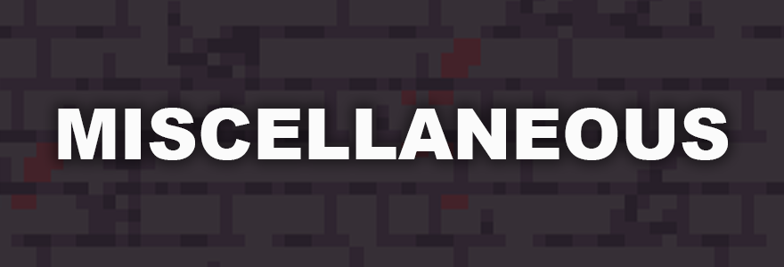

banners
For this project, I worked with a video game raid Discord server to redesign their header banners (I also previously made this server an icon). The server I was collaborating with is centered around the Realm of the Mad God dungeon The Shatters. The background of the banner is the floor of the first boss room. This idea was consistent with the previous banners they had, with assets from the older version of the dungeon. One of the main reasons the server was looking to revamp their visuals was because the in-game dungeon had recently been entirely reworked (visually and gameplay-wise).
When considering the font, I went for a few initial concepts. Following the previous banner's format, I went for a blocky sans serif font, settling with Arial Black. This was pretty similar to the previous, and presented a bold, legible text.
I also experimented with a serif font, Iowan Old Style. I thought this had a bit more of a "sophisticated" feel, matching with the royal theme of the dungeon.
Additionally, I found a pixel font that was very similar to a font used in-game, Chicpix. This seemed fitting thematically, and was certainly more unique than the others.

The server leaders decided on Chicpix, and then we looked to the font case. My initial usage of lower case was because this format felt the most uniform and bold. While the lower case letters are smaller than the capitals, the thickness of the line remanins the same, which I felt lent a bolder feel to the letters. For comparison, we tried all lower, all upper, and title case. Ultimately, the server staff decided on the title case. I do agree that this works design-wise. Since the banners act as section headers, title case makes sense. All caps seems a bit more aggressive than needed, and all lower may be a bit more informal feeling.
While I initially thought this project would be relatively simple, there was definitely a lot of opportunities to take more insight.
Adobe Photoshop; March 2021